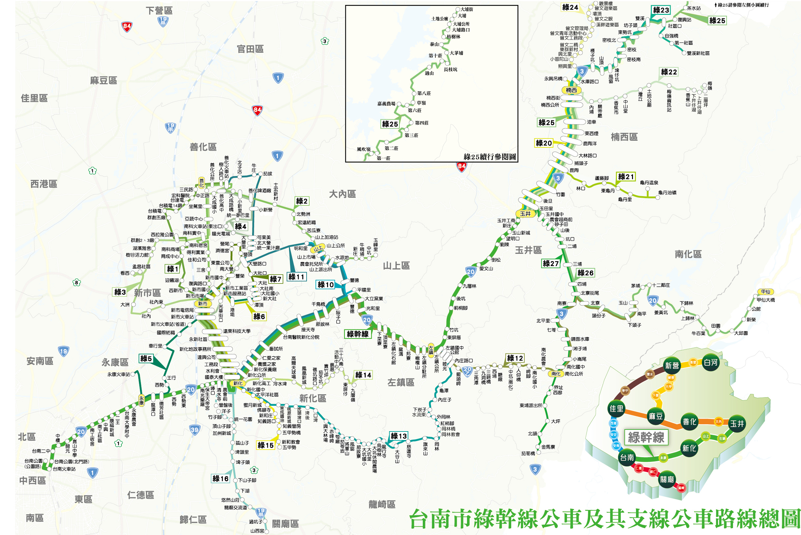

|
|  |
|
綠幹線 臺南 ─ 永康 ─ 新化 ─ 玉井
|
| 綠1 |
新化 ─ 新市 ─ 南科 ─ 善化 |
綠15 |
新化 ─ 五甲勢 |
| 綠2 |
新化 ─ 新市 ─ 南科 ─ 善化 ─ 山上 |
綠16 |
新化 ─ 關廟 ─ 高鐵臺南站 |
| 綠3 |
新化 ─ 新市 ─ 看西 ─ 南科 ─ 善化 |
綠17 |
安工區 ─ 大灣 ─ 新化 |
| 綠4 |
新化 ─ 新市 ─ 陽光電城 ─ 善化火車站 |
綠20 |
玉井 ─ 楠西 ─ 永興吊橋 |
| 綠5 |
臺鐵永康 ─ 潭頂 ─ 大社 |
綠20-1 |
玉井 ─ 虎頭山 |
| 綠6 |
新化 ─ 潭頂 ─ 大社 |
綠21 |
玉井 ─ 龜丹油礦 |
| 綠7 |
新化 ─ 大營 ─ 大社 |
綠22 |
玉井 ─ 梅嶺 |
| 綠10 |
新化 ─ 山上 |
綠23 |
玉井 ─ 雙溪新社區 |
| 綠11 |
新化 ─ 山上 ─ 善化 |
綠24 |
玉井 ─ 曾文水庫管理局 |
| 綠12 |
新化 ─ 南化 |
綠25 |
玉井 ─ 大埔 |
| 綠13 |
新化 ─ 岡林 ─ 左鎮 |
綠26 |
玉井 ─ 甲仙 |
| 綠14 |
新化 ─ 九層嶺 |
綠27 |
玉井 ─ 南化 ─ 茄苳橋 |
|